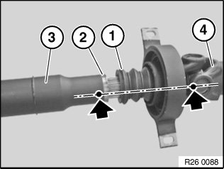
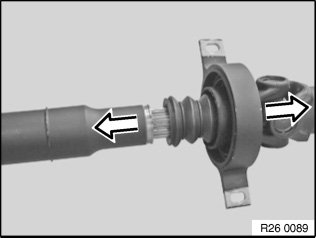
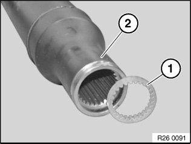
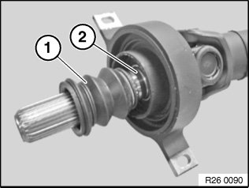

26 11 020 Replacing Centre Mount Gaiter
26 11 020 Replacing center mount gaiterNecessary preliminary tasks:
^ Remove propeller shaft.

Note:
The propeller shaft is balanced. The front and rear propeller shafts must be reassembled in the same position.
Detach gaiter (1) from groove (2).
Mark front propeller shaft (3) and rear propeller shaft (4) in one plane.

Pull propeller shaft apart.

Installation:
If necessary, insert new clamping ring (1) into front propeller shaft (2).

Release gaiter (1) with screwdriver from groove (2) and pull off over longitudinal splines.
Installation:
Apply an even coating of grease to longitudinal splines on shaft.
Grease, refer to BMW Service Operating Fluids.
Observe markings and force front propeller shaft onto longitudinal splines (markings must be flush).
Push gaiter (1) during installation into groove (2) and make sure it is firmly seated.